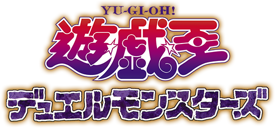
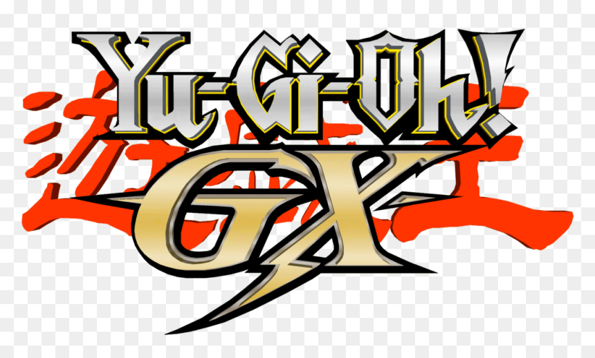
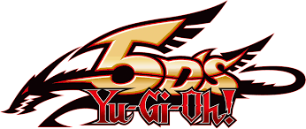
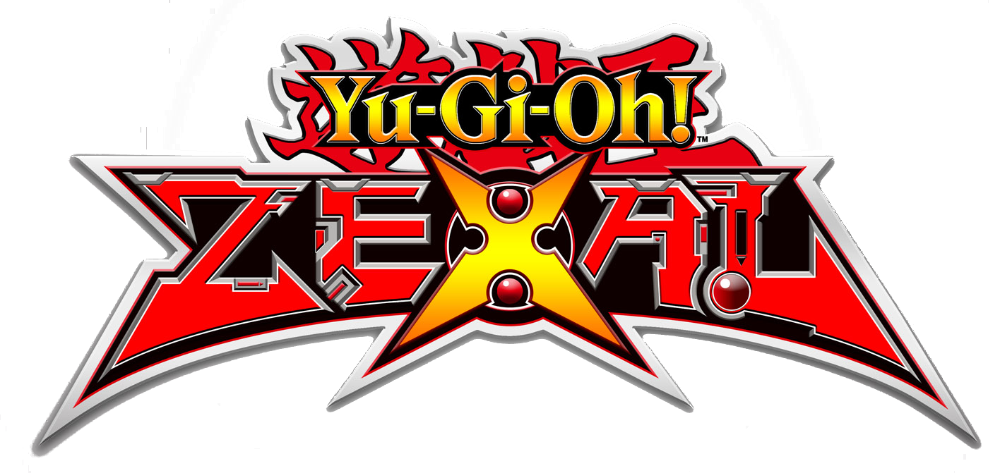
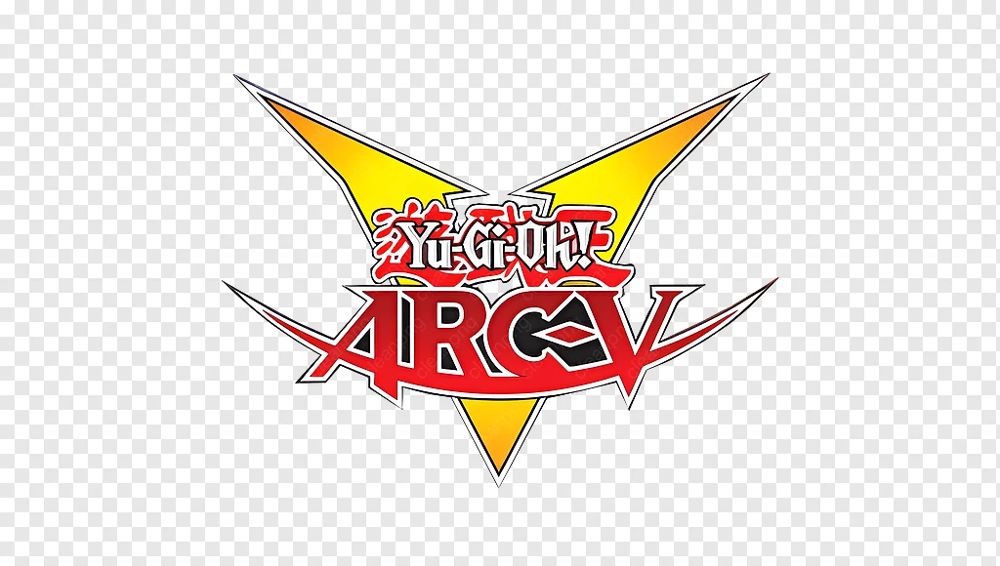
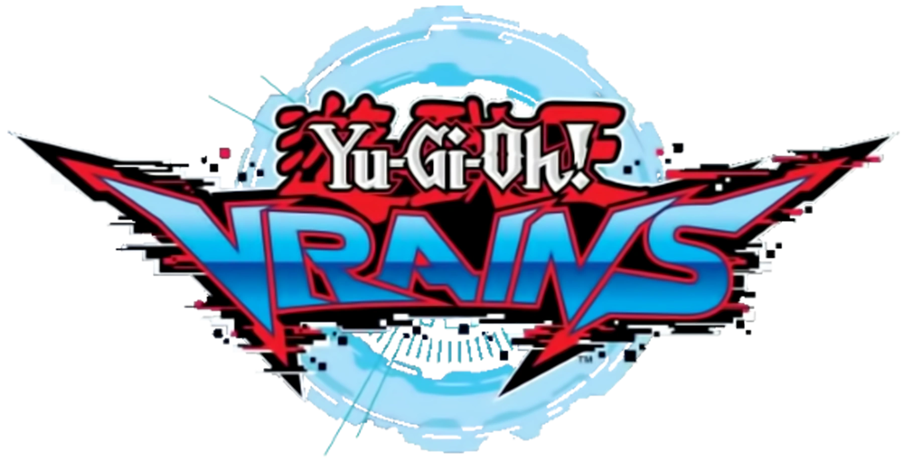

從「口胡」時代到嚴謹的規則演進史
| 維度 | 動畫 (Anime) | 實體卡 (OCG/TCG) |
|---|---|---|
| 效果強度 | 基本不考慮強度，新卡的效果只為了驅動劇情的輸贏 | 經過平衡，新卡必須符合競技環境，且有嚴謹的禁限卡表 |
| 規則嚴謹度 | 模糊、常因劇情需要「口胡」修改 | 極度嚴謹，擁有複雜的「大師規則」與連鎖機制 |
| 系列 | 核心機制 | 動畫規則特色 | 實體化差距 |
|---|---|---|---|
|
 DM |
上級召喚:犧牲場上的怪獸進行高星怪獸的通常召喚 | 規則未完善。經典特徵是「屬性相剋」與隨意更改的卡片效果。 | ❌ 極大 |
|
 GX |
融合召喚:以場上或手牌的怪獸為素材，從額外卡組特召一體融合怪獸 | 強調英雄特化。動畫中融合素材彈性極高且抽濾卡過多。 | ⚠️ 較大，其中的貪慾之壺被禁止使用 |
|
 5D's |
同步召喚:以場上的協調外獸與非協調進行調星，從額外卡組特召一體同步怪獸 | 引入「協調怪獸」。動畫中有「騎乘決鬥」與高速計數器規則。 | ⭕ 中等，現實中沒有騎車進行決鬥 |
|
 ZEXAL |
超量召喚:以場上相同等級的怪獸疊放，從額外卡組特召一體超量怪獸 | 「疊放」機制。動畫中 No. 怪獸擁有非 No. 無法破壞的設定。 | ⚠️ 偏大 |
|
 ARC-V |
靈擺召喚:將靈擺怪獸作為永續魔法卡設置，從手牌與表側額外卡組特召任意數量的靈擺怪獸 | 橫跨魔法與怪獸。動畫中強調「動作決鬥」，可隨意撿取動作卡保命。 | ❌ 極大。現實沒有遍地的動作卡且極大更改靈擺規則 |
|
 VRAINS |
連結召喚:以場上的怪獸連結，從額外卡組特召一體連接怪獸 | 強調「位置」與「連結指向」。動畫決鬥邏輯極其嚴謹。 | ✅ 極小 |
動畫： 靈擺怪獸被破壞會表側表示送往額外卡組，下一回合能無代價全部集體特召。動畫中展現了近乎無限的再生能力。
實體： 在大師規則中被修改為：必須特招到「連結箭頭」指向的位置或額外怪獸區。
動畫： 沒有代價，直接從卡組抽2枚卡。
實體： 被列為禁止卡之一，決鬥中無法使用。
從早期的「口胡」浪漫到 **ARC-V** 的規則大爆炸，再到 **VRAINS** 的嚴謹連結，
遊戲王不斷在劇情張力與競技平衡之間尋找交點。